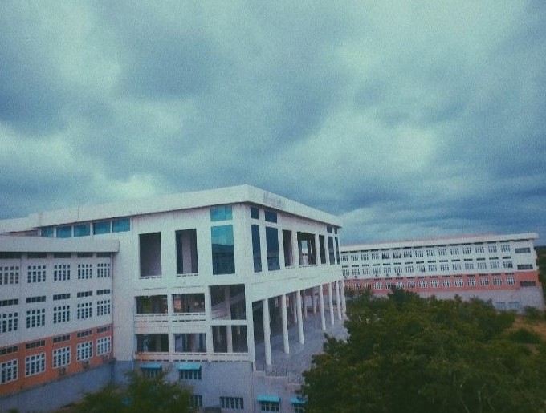

About
University of Computer Studies (Pakokku) (formerly Computer University (Pakokku),[3] Government Computer College (Pakokku)[2]) is a public undergraduate university located in Pakokku, Magway Region, Myanmar. Students study various computer disciplines, including hardware, networking, programming, imaging, and artificial intelligence.[4] Its uniform is white for upper wear and light blue for longyi.[5]

Former name Computer University (Pakokku) Government Computer College (Pakokku) Motto Type Public undergraduate university Established 21 January 2002 Principal Dr. Tin Tin Thein[1] Location Pakokku, Magway Region, Myanmar 21.3327°N 94.9858°E Language BurmeseEnglish Colors Light blue, white Website www.ucspkku.edu.mm
History Edit Government Computer College (Pakokku) was established on 21 January 2002. It became Computer University (Pakokku) on 20 January 2007[2] and was later renamed University of Computer Studies (Pakokku).[2]
Degrees Edit The university offers five-year Bachelor of Computer Science (B.C.Sc)[6] and Bachelor of Computer Technology (B.C.Tech)[7] degree programs.
Departments Edit Academics are divided into the following departments:[2]
Faculty of Computer Science Faculty of Computer Systems and Technologies Faculty of Information Science Faculty of Computing Department of Information Technology Supporting & Maintenance Department of Natural Science Department of Languages Library Practical rooms Edit The University has practical rooms for English language listening and for computer and physics practical works. It has a library with especially computer-related books and journals as well as more general subject matter.
References Edit "Principal". University of Computer Studies (Pakokku). Retrieved 6 July 2019. Jump up to:a b c d e "University of Computer Studies (Pakokku) – Ministry of Education". University of Computer Studies (Pakokku). Retrieved 6 July 2019. "pakokkucu – Home". Computer University (Pakokku). 12 January 2009. Archived from the original on 19 July 2011. Retrieved 6 July 2019. "Courses". University of Computer Studies (Pakokku). Retrieved 6 July 2019. Williams, I (19 August 2011). Comprehensive Directory of Universities in the World Volume 1 – Country index from A–H. p. 60. ISBN 9781466250680. Retrieved 6 July 2019. "Bachelor of Computer Science (B.C.Sc)". University of Computer Studies (Pakokku). Retrieved 6 July 2019. "Bachelor of Computer Technology (B.C.Tech)". University of Computer Studies (Pakokku). Retrieved 6 July 2019. External links Edit Official website
Stub icon This article about a tertiary education institute in Myanmar is a stub. You can help Wikipedia by expanding it.